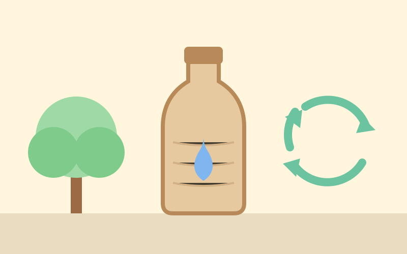

💡 בוקר טוב כלכלה
מפעל ראשון לבקבוקי נייר נפתח בסקוטלנד
8 באוקטובר 2026 ממהדורה 2 · 11 באוקטובר 2026
ב־8 באוקטובר 2026 פתחה החברה הבריטית פולפקס (Pulpex) ליד העיר גלזגו שבסקוטלנד את המפעל המסחרי הראשון שלה לבקבוקים מנייר.
הבקבוקים עשויים מעיסת עץ, בלי פלסטיק נסתר, ואפשר למחזר אותם יחד עם הנייר והקרטון בבית. המפעל יכול לייצר עד 40 מיליון בקבוקים בשנה, והוא יוצר כ־39 מקומות עבודה. לפי החברה, יותר מ־90% מהייצור של השנה הראשונה כבר נמכר מראש. בין הראשונים: חברה שתמכור מים מינרליים בבקבוק נייר, לראשונה בבריטניה.
ולמה זו חדשה כלכלית? המפעל נבנה בעזרת השקעה של קרן ובנק ציבוריים בבריטניה ובסקוטלנד, והחברה מתכננת לתת לחברות במדינות אחרות רישיון לייצר את הבקבוקים, עם יעד של מיליארד בקבוקים בשנה. רעיון חדשני הופך לעסק ולמשרות.
💬 לחשוב ולשוחח: אילו עוד דברים שאנחנו משתמשים בהם כל יום הייתם רוצים ורוצות להחליף מפלסטיק לחומר אחר? מה צריך לבדוק לפני שמחליפים?
מקורות וקרדיטים
📰 מקורות המידע
- Pulpex opens first commercial fibre bottle factory in Glasgow · Pulpex (הודעת החברה) (8 באוקטובר 2026)
📖 להעמיק ולקרוא עוד
תמונה: איור מקורי של Kita · רישיון: מותר לשימוש חינוכי
הידיעה נכתבה במילים שלנו על סמך המקורות.